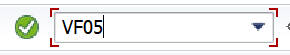
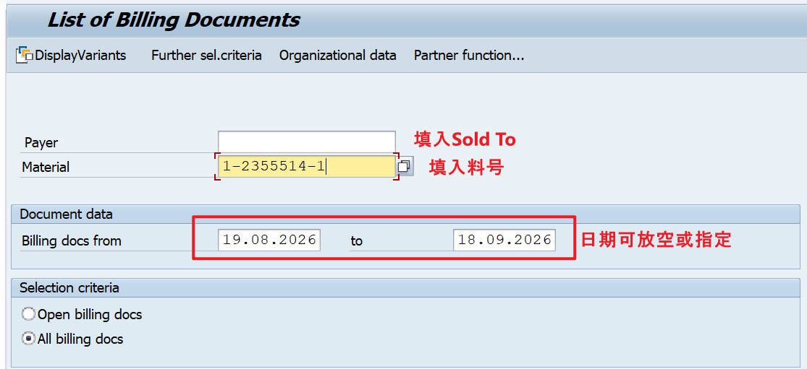
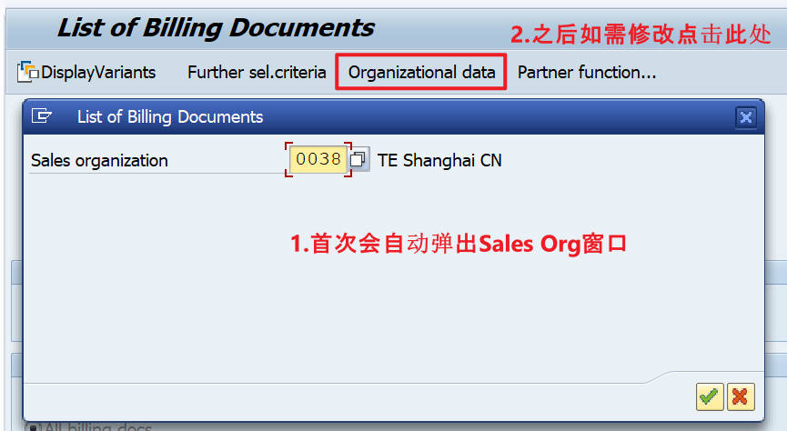

SAP VF05 查询历史出货记录 · 4步搞定 👇
SAP 打开 VF05

输入查询条件：Sold To（客户）、Material（料号），日期可以留空，也可以指定时间区间。

首次进入系统会自动弹出 Sales Organization。默认请填写：0038，点击✅即可。后续如需修改，可进入 Organizational Data 重新调整。

按 Enter（回车） 执行查询。系统会显示 Billing Document、Sold To、Material、Quantity、Billing Date 等信息，即可查看客户出货记录。